Psi
Dieser Artikel wurde für die folgenden Ubuntu-Versionen getestet:
Ubuntu 16.04 Xenial Xerus
Ubuntu 14.04 Trusty Tahr
Zum Verständnis dieses Artikels sind folgende Seiten hilfreich:
Psi  ist ein auf Qt basierender und stark konfigurierbarer Instant Messenger für das XMPP-Protokoll und bringt einige hilfreiche Funktionen mit sich. Er wird für verschiedene Plattformen entwickelt. Zu den stärksten Funktionen zählt die Möglichkeit, Nachrichten mittels GnuPG zu verschlüsseln oder seine Gespräche in Tabs anzuordnen.
ist ein auf Qt basierender und stark konfigurierbarer Instant Messenger für das XMPP-Protokoll und bringt einige hilfreiche Funktionen mit sich. Er wird für verschiedene Plattformen entwickelt. Zu den stärksten Funktionen zählt die Möglichkeit, Nachrichten mittels GnuPG zu verschlüsseln oder seine Gespräche in Tabs anzuordnen.
Mit Psi Plus gibt es ein weiteres Programm in den offiziellen Paketquellen. Hierbei handelt es sich um Abspaltung (Fork) des Originalprogramms, das um eine Reihe weiterer Funktionen ergänzt wurde. Im Folgenden wird das ursprüngliche Psi beschrieben.
Installation¶
Folgende Pakete müssen installiert [1] werden:
psi (universe, Hauptprogramm)
psi-translations (universe, Sprachdateien)
 mit apturl
mit apturl
Paketliste zum Kopieren:
sudo apt-get install psi psi-translations
sudo aptitude install psi psi-translations
Optional:
libqca2-plugin-gnupg (universe, GnuPG-Unterstützung)
mit apturl
Paketliste zum Kopieren:
sudo apt-get install libqca2-plugin-gnupg
sudo aptitude install libqca2-plugin-gnupg
Nach erfolgreicher Installation lässt sich Psi über "Internet -> Psi Jabber Client" bzw. "K-Menü -> Internet -> Psi Jabber Client" starten [2].
| 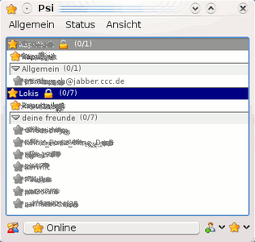 |
| Hauptfenster |
| 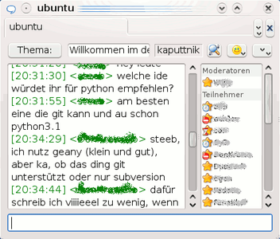 |
| Chatfenster mit Tabs |
Benutzung¶
Neues XMPP-Konto registrieren¶
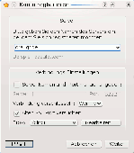Über den Menüpunkt Allgemein -> Benutzerkonten lässt sich leicht ein neues Konto erstellen und registrieren:
Nach Klick auf "Hinzufügen" ein Name für das Konto eingeben (oder Vorgabewert übernehmen) und Häkchen bei "Neues Benutzerkonto registrieren" setzen, "Hinzufügen" anklicken
Nun muss ein Server eingetragen werden. Bei der Wahl des Servers sollte man darauf achten, welche Funktionen dieser mitbringt. In dieser Liste von XMPP-Servern kann man sich umschauen, welche "Transports" oder Besonderheiten ein Server unterstützt, damit man z.B. weiterhin seine Kontakte aus anderen Protokollen (wie ICQ) pflegen kann. Die Verbindungseinstellungen belässt man wie vorgegeben, dann auf "Weiter".
Nach kurzer Überprüfung des Servers muss im folgenden Fenster ein Benutzername und ein Kennwort eingegeben werden. Der Benutzername wird Teil der eindeutigen JID. Sollte der Benutzername noch nicht vergeben sein, erhält man im nächsten Hinweisfenster seine persönliche JID angezeigt. Nun ist die Registrierung abgeschlossen!
Anschließend können noch diverse Konteneinstellungen vorgenommen werden, so auch die automatische Verbindung bei Programmstart.
Bestehendes Konto Hinzufügen¶
Hierzu trägt man im Feld "Name" einen beliebigen Namen ein. Dieser dient zur Verwaltung des Kontos und hat mit dem eigentlichen XMPP-Konto nichts zu tun. Nun wählt man "Hinzufügen" aus.
Nun erscheint ein neues Fenster. In diesem gibt man seine Daten für das XMPP-Konto ein.
Chat starten¶
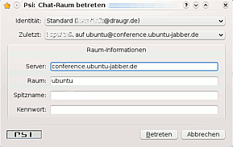 Nach Klick auf "Allgemein -> Chat-Raum betreten" kann man entweder einen bereits besuchten Chatraum aussuchen oder einen neuen Chatraum eintragen. Für den Chat-Raum von Ubuntu trägt man beispielsweise die folgenden Daten ein:
Server: "conference.ubuntu-jabber.de"
Raum: "ubuntu"
Spitzname: Beliebig
Siehe auch: XMPP (Jabber)
Dienste durchsuchen¶
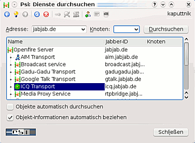 Über den Menüpunkt "Allgemein -> Dienste durchsuchen" kann man nach anderen Chaträumen und Kontakten suchen oder sogenannte Transports (Möglichkeit, z.B. einen ICQ-Zugang ebenfalls mit XMPP (Jabber) zu nutzen) einrichten. Die grundsätzliche Vorgehensweise ist immer gleich: Im erscheinenden Fenster gibt man als Adresse einen XMPP-Server und geht anschließend auf "Durchsuchen". Nun werden alle Dienste des Servers angezeigt und man kann sich auf die Suche machen.
Transport für andere Protokolle einrichten¶
Abhängig von den Fähigkeiten des Servers erscheinen Dienste wie "ICQ-Transport" oder "IRC-Transport". Andere Protokolle werden gegebenenfalls auch unterstützt. Nach der Auswahl des Protokolls macht man einen Rechtsklick  , wählt "Registrieren" und gibt die entsprechenden Zugangsdaten des jeweiligen Protokolls ein. Der Zugang ist nun eingerichtet und eventuell vorhandene Kontakte werden der Liste hinzugefügt.
, wählt "Registrieren" und gibt die entsprechenden Zugangsdaten des jeweiligen Protokolls ein. Der Zugang ist nun eingerichtet und eventuell vorhandene Kontakte werden der Liste hinzugefügt.
Kontakt suchen¶
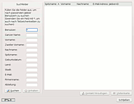 Das Suchen von Kontakten ist ebenfalls möglich. Nach Auswahl des Servers sucht man Dienste mit Namen wie "Jabber User Directory", "Benutzerverzeichnis", "User Search", "vCard Benutzersuche" oder ähnlichem. Nach einem Rechtsklick darauf wählt man "Suchen" (nicht "Durchsuchen"!). Im sich öffnenden Suchfenster kann man nun nach der gewünschten Person suchen. Wenn man seinen Kontakt gefunden hat, klickt man auf "Kontakt hinzufügen".
Kontakte gruppieren¶
Um den Überblick zu behalten, empfiehlt es sich die Kontakte in Gruppen einzuteilen. So kann man z.B. eine Liste "Ubuntuusers" erstellen und in ihr alle Kontakte aus diesem Forum ablegen. Hierzu einen Rechtsklick auf dem "Kontakt" ausführen, dann "Gruppe -> Neu erstellen..." und einen treffenden Namen eingeben oder einer bereits existierenden Gruppe zuordnen. Vorteil: Man kann eine Nachricht an alle Mitglieder der Gruppe senden. Die Kontakte lassen sich auch einfach im Hauptfenster per "drag & drop" gruppieren.
Kontakt hinzufügen¶
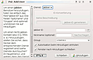 Um einen Kontakt hinzuzufügen, klickt man auf "Allgemein -> Kontakt hinzufügen". Im erscheinenden Fenster gibt man nun die JID eines Kontaktes ein - ebenfalls BENUTZER@SERVER. Wenn man lieber einen eigenen Namen für seinen Kontakt haben möchte, gibt man unter Spitzname einen beliebigen Namen ein. Dieser wird anstelle der JID in der Kontaktliste angezeigt. Zu allerletzt wählt man noch die Gruppe, in der der Kontakt hinzugefügt werden soll.
Konto verwalten¶
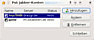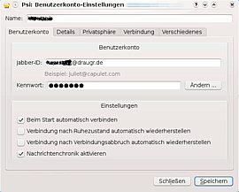 Um Einstellungen am Konto vorzunehmen, klickt man auf "Allgemein -> Benutzernutzerkonten -> Konto wählen -> Ändern". Im neuen Fenster können verschiedene kontenspezifische Einstellungen vorgenommen werden:
"Benutzerkonto": In diesem Reiter kann man die Zugangsdaten zum XMPP-Protokoll eingeben, sein Passwort ändern und Einstellungen vornehmen, um seinen Gesprächsverlauf zu speichern oder um sich beim Start von Psi direkt mit dem Server zu verbinden.
"Details": Hier ist es möglich eine Visitenkarte zu erstellen. Hierzu die gewünschten Daten eingeben und "veröffentlichen". Diese Informationen sind im "Jabber Benutzerverzeichnis" öffentlich abrufbar. Zusätzlich kann man noch einen OpenPGP- oder GnuPG-Schlüssel zur Verschlüsselung auswählen, sofern man einen für seine JID erstellt hat.
"Verbindung": In dieser Rubrik kann man Proxydaten eintragen und erweiterte Einstellungen wie z.B. SSL Verschlüsselung aktivieren.
"Verschiedenes": Hier kann man noch einen Datentransfer-Proxy eingeben.
Verbindungsstatus¶
Der nach der Installation vorhandene Verbindungsstatus ist selbsterklärend. Aber Psi bietet die Möglichkeit, einen eigenen Status zu erstellen. Dazu klickt man im Hauptmenü "Allgemein -> Optionen", wählt links den Abschnitt "Status" und klickt nun unter "Vorgaben" auf "Neu". Nun gibt man einen Namen für den Status ein. Danach muss man nur noch den Inhalt dieses Status in das Textfeld unten eingeben. Der Text wird automatisch gespeichert, ein Klick auf "OK" genügt.
Nachrichten senden¶
Um eine Nachricht zu senden, hat man zwei Optionen. Zum einen kann eine einzelne Nachricht gesendet oder aber ein Chat eröffnet werden. Die Auswahl erscheint bei einem Rechtsklick auf den Kontakt. Bei einem doppelten Linksklick  öffnet sich direkt das Chatfenster.
öffnet sich direkt das Chatfenster.
Verschlüsselung¶
Mit SSL¶
"Allgemein -> Nutzerkonton -> Konto auswählen -> Ändern -> Verbindung" und "SSL-Verschlüsselung verwenden" und "SSL-Warnungen ignorieren" anklicken.
Mit OpenPGP/GnuPG¶
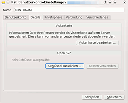 Da die Daten mit SSL nur zum Server verschlüsselt werden und nicht von Server zu Server, kann man zusätzlich noch die Nachrichten mittels OpenPGP verschlüsseln. Hierzu muss man sich einen öffentlichen und einen privaten Schlüssel für die JID erstellen. Wie solch ein Schlüssel generiert wird, erfährt man im Artikel GnuPG im Abschnitt Schlüsselpaar erzeugen. An der Stelle, wo die E-Mail Adresse eingegeben werden soll, muss nun die JID (BENUTZER@SERVER) eingegeben werden. Anschließend müssen nur noch folgende Schritte getätigt werden:
"Allgemein -> Benutzerkonto -> Konto auswählen -> Ändern -> Details" und "Schlüssel auswählen" und den entsprechenden Schlüssel auswählen.
Wenn sich kein Schlüssel auswählen lässt, ist wahrscheinlich das Paket libqca2-plugin-gnupg nicht installiert.
Seit Version 0.11 ist ein GPG-Agent nötig, der, wie im Artikel GPG-Agent unter dem Kapitel "Optionen" beschrieben, konfiguriert werden muss, sonst wird überhaupt nicht oder bei jeder Aktion nach dem Passwort für den GPG-Schlüssel gefragt.
Dateitransfer einrichten¶
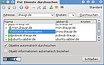 Am einfachsten ist die Einrichtung des Dateitransfers, wenn der Server, bei dem man angemeldet ist, einen Datentransferproxy bereitstellt.
Ob der eigene Webserver einen Dateitransferproxy anbietet, erfährt man entweder auf der Webseite des Servers oder man sucht in den Diensten nach der Angabe "proxy.xy". Wird nach einem auf den Eintrag der Text "SOCKS5 BYTESTREAMS" ausgegeben, kann man die entsprechende JID in den Einstellungen des Kontos angeben.
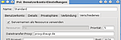 Hierzu wird unter "Allgemein -> Benutzerkonten -> Ändern" im Reiter "Verschiedenes" die soeben gefundene JID des Proxys im Feld "Dateitransfer-Proxy:" eingegeben.
Nach einem Neustart von PSI ist der Client für die Dateiübertragung eingerichtet.
Sollte der eigene Server keinen Dateitransferproxy zur Verfügung stellen, so gibt das Wiki von Psi auf der Seite http://psi-im.org/wiki/File_Transfer weitere Hinweise zur Einrichtung.
Konfiguration¶
Wie in der Einleitung erwähnt, lässt sich Psi sehr stark an seine eigenen Ansprüche anpassen. Hier werden einige Konfigurationsmöglichkeiten erwähnt und erläutert.
Symbolleisten¶
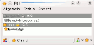
Die Symbolleiste konfiguriert man, indem man einen Rechtsklick auf diese ausführt und "Symbolleiste einrichten" oder "Allgemein -> Optionen -> Symbolleisten" auswählt.
Im neuen Fenster kann man nun die verschiedenen Symbolleisten auswählen. Die obere heißt "Show contacs" und die untere "Buttons". Wählt man nun eine der beiden Leisten aus, kann man die "verfügbaren Aktionen" mit den Pfeiltasten im Fenster zu der Liste mit den "gewählten Aktionen" hinzufügen und wieder entfernen. Die Reihenfolge der "gewählten Aktionen" lässt sich mit der ↑ bzw. ↓ ändern.
Aussehen¶
Das Aussehen ist ebenfalls veränderbar. Über "Allgemein -> Optionen -> Aussehen" lassen sich die Schriftarten und Farben, Emoticons, Listenicons, Systemicons und Verschiedenes einstellen.
Psi kann auch mit Icon-Paketen im jisp-Format umgehen. Die Icons befinden sich in den Ordnern /usr/share/psi/iconsets/. Jetzt muss man nur noch die Icons in die gewünschten Ordner /emoticons für Chat, /roster für Kontaktliste und /system für das Hauptfenster kopieren.
Hinweis:
Psi zeigt im Moment keine Smileys im GIF-Format an.
Klänge¶
Die Klänge lassen sich über "Hauptmenü -> Optionen -> Klänge" aktivieren und durch andere WAV-Dateien ersetzen.
Docklet¶
Zum Aktivieren des Docklets "Hauptmenü -> Optionen -> Anwendungen -> [X] Docklet aktivieren" anklicken. Auch können hier weitere Feineinstellungen vorgenommen werden.
Firewall¶
Falls eine Firewall eingerichtet sein sollte, unbedingt darauf achten, dass die Ports "5222" und "5223" freigegeben sind.
Befehle¶
Im Chat können noch folgende Kommandos von Nutzen sein:
/clear -> löscht den Inhalt des Chatfensters /me <Nachricht> -> /me wird durch deinen Benutzernamen ersetzt
Ändern des Spitznamens im Gruppenchat:
/nick <Neuer_Spitzname>
Problembehebung¶
Bei Problemen kann oft im Forum von Psi Hilfe gefunden werden.
Keine Ereignistöne¶
Es kann es sein, dass die vorgesehenen Töne bei Ereignissen nicht erklingen. Lösungen:
Im "Hauptmenü -> Optionen -> Klänge -> Player: aplay" einstellen. Das Programm aplay befindet sich im Paket [1]
alsa-utils
mit apturl
Paketliste zum Kopieren:
sudo apt-get install alsa-utils
sudo aptitude install alsa-utils
Im Hauptmenü nichts ändern, sondern folgende Pakete installieren:
libsox-fmt-all (universe)
sox (universe)
mit apturl
Paketliste zum Kopieren:
sudo apt-get install libsox-fmt-all sox
sudo aptitude install libsox-fmt-all sox
URLs öffnen sich nicht¶
Sollten sich die URLs nicht im Browser öffnen, dann kann es daran liegen, dass Psi versucht, einen nicht auf dem System installierten Browser auszuführen. Unter
"Hauptmenü -> Optionen -> Anwendungen -> URLs öffnen mit..."
muss man abhängig vom Betriebssystem auf GNOME oder KDE umstellen oder benutzerdefinierte Befehle eingeben.
URLs sind im Chat nicht anklickbar¶
Sind URLs schon im Chat nicht als solche erkenntlich und auch nicht anklickbar, so muss die "Nachrichtenformatierung des Kontakts" ausgeschaltet werden. Zu finden ist diese Option unter
"Allgemein -> Optionen -> Verschiedenes".
Keine automatische Rechtschreibkorrektur¶
Für die automatische Rechtschreibkorrektur muss GNU Aspell installiert sein:
aspell
aspell-de
mit apturl
Paketliste zum Kopieren:
sudo apt-get install aspell aspell-de
sudo aptitude install aspell aspell-de
Außerdem muss unter
"Hauptmenü -> Optionen -> Verschiedenes" die Einstellung "Check spelling"
aktiviert sein.
 Übersichtsseite zu XMPP (Jabber)
Übersichtsseite zu XMPP (Jabber)- Erstellt mit Inyoka
-
 2004 – 2017 ubuntuusers.de • Einige Rechte vorbehalten
2004 – 2017 ubuntuusers.de • Einige Rechte vorbehalten
Lizenz • Kontakt • Datenschutz • Impressum • Serverstatus -
Serverhousing gespendet von